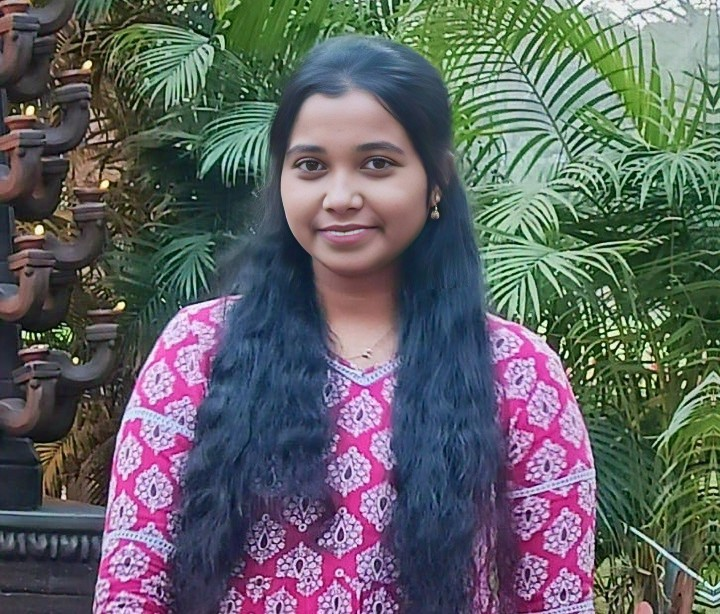

Hello! I am Usha Rani Kannaji, a passionate DevOps & Cloud Engineer dedicated to building secure, scalable, and production-ready cloud-native systems. I have hands-on experience in Linux, Git, AWS, Docker, Kubernetes, Jenkins, and infrastructure automation.
Throughout my learning journey, I have implemented CI/CD pipelines, containerized applications, automated infrastructure deployments, and integrated DevSecOps practices such as SonarQube quality gates and container security. I enjoy optimizing cloud architectures and building reliable, automated systems that scale efficiently.
I am eager to contribute my skills to real-world DevOps projects and collaborate with teams that value automation, cloud-native solutions, and secure infrastructure. Currently, I am actively exploring opportunities to grow as a DevOps Engineer and apply my knowledge in production environments.
B.Tech – Electronics & Communication Engineering
Rajiv Gandhi University of Knowledge and Technologies (RGUKT), Srikakulam
Graduated: May 2025
Linux • AWS • Git • GitHub • Docker • Kubernetes • Jenkins • MySQL
Started learning Linux, Git, and Cloud fundamentals in 2025, built CI/CD pipelines using Jenkins and Docker, worked with Kubernetes and AWS infrastructure automation, and now continuously building projects to advance as a DevOps Engineer in 2026.